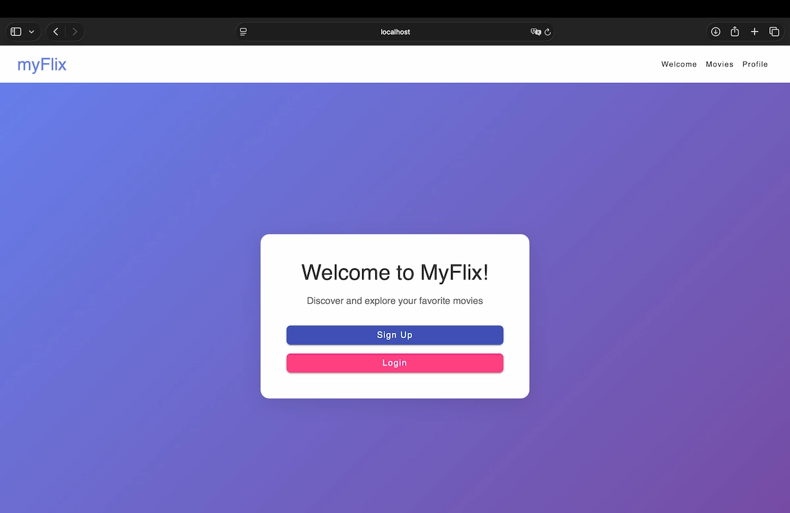
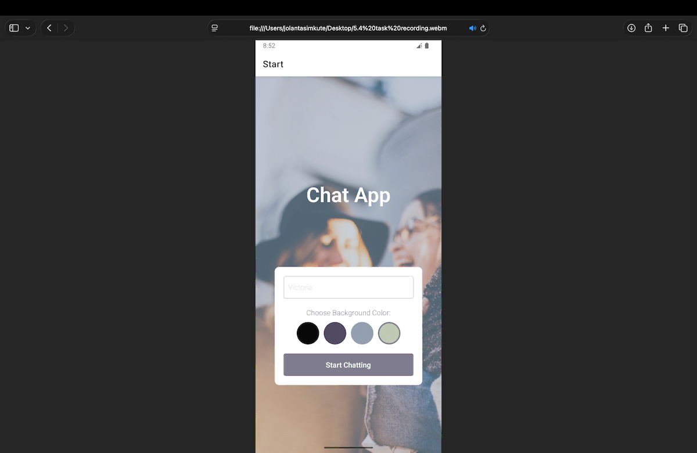
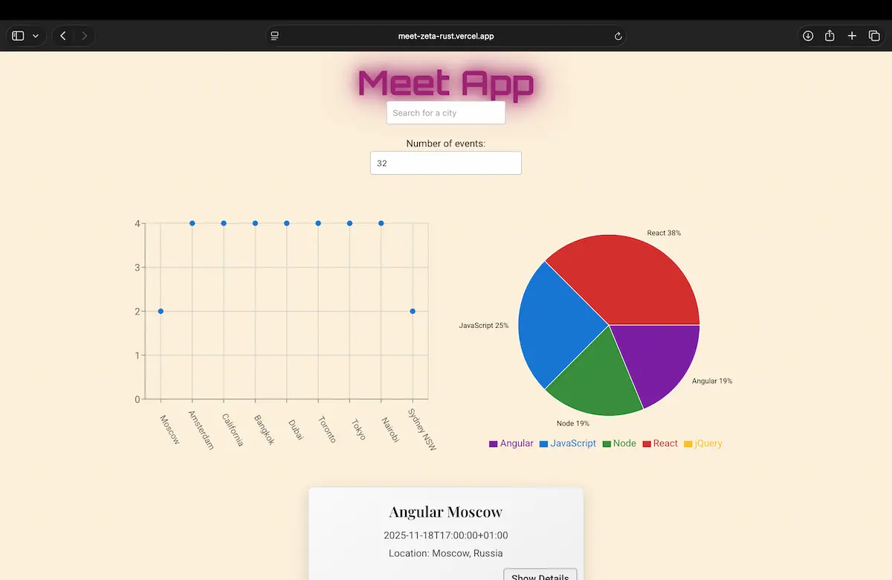
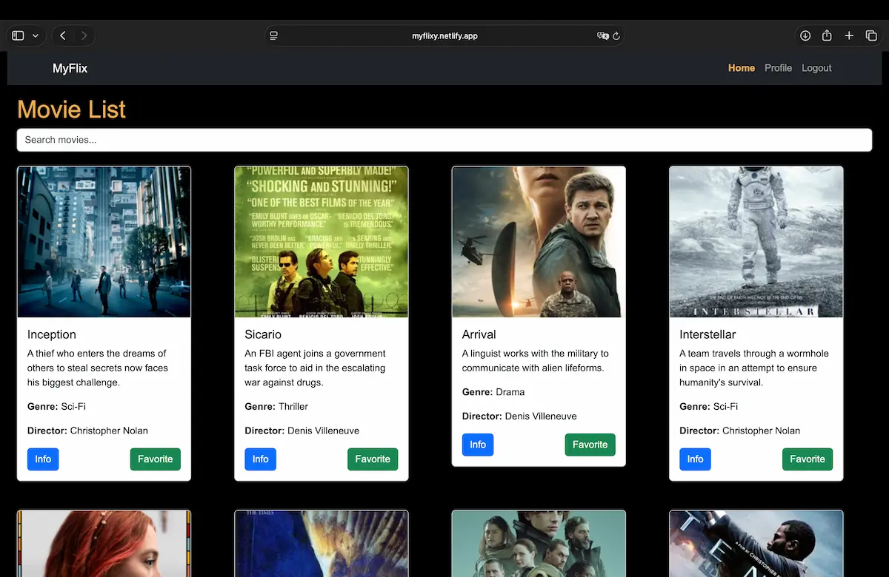
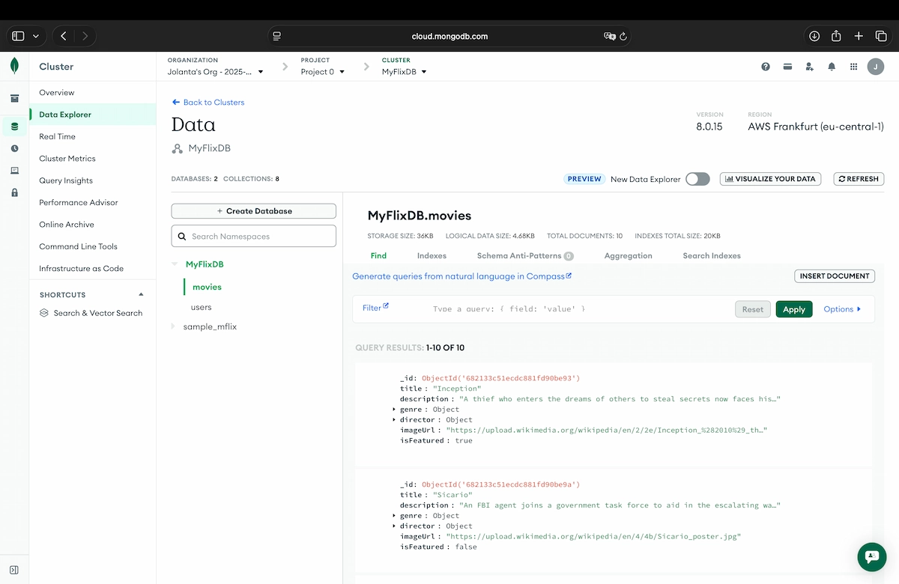
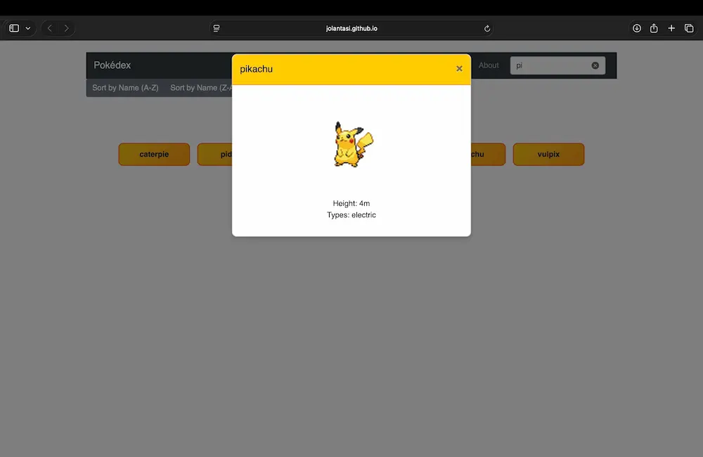

The myFlix Angular Client is a fully responsive, single-page application built with Angular that consumes a custom RESTful movie API (source code available here). The app implements secure user authentication, dynamic routing, and real-time interaction with the backend, allowing users to explore a movie catalog, view detailed information about directors and genres, manage their profiles, and curate a list of favorite movies. The interface is built with Angular Material, leveraging reusable UI components such as dialogs, cards, form controls, icons, and snackbars to deliver a clean, accessible, and modern user experience. The application architecture is based on standalone Angular components and Angular’s routing system, ensuring maintainability, scalability, and clear separation of concerns between views, services, and data flow. This project demonstrates my ability to design a complete client-server application, integrate a frontend with a REST API, and build production-ready Angular applications with a strong focus on usability and code structure.
Technologies: Angular • TypeScript • Angular Material • HTML • SCSS • REST API • RxJS
Development Practices: Modular Architecture • Standalone Components • Routing • API Integration • TypeDoc Documentation
See project on GitHub
The Chat App is a real-time mobile messaging application built with React Native and Expo. It allows users to chat anonymously, share images from their library or camera, and send their live geolocation. The app integrates Firebase Firestore for real-time message synchronization and Firebase Storage for media uploads. It also supports offline usage by caching messages locally and gracefully restoring connection when the device goes back online.
Technologies: React Native • Expo • JavaScript • Firebase Firestore • Firebase Storage • Google Authentication
Development Practices: Anonymous Auth • Media Uploads • Geolocation • Offline Support • Responsive UI • Accessibility
See project on GitHub
Meet App is a responsive, serverless Progressive Web Application (PWA) built with React. It allows users to search for upcoming events by city and visualize event data through interactive charts. The app is fully functional offline, can be installed on any device’s home screen, and integrates with the Google Calendar API for real event data.
Technologies: React • JavaScript • HTML • CSS • Recharts • Google Calendar API • AWS Lambda
Development Practices: TDD • BDD • OOP
See project on GitHub
The myFlix React Client is a responsive single-page application (SPA) built with React that connects to a custom REST API to provide detailed information about movies, directors, and genres. Users can create an account, log in securely, manage their profile, and curate a personal list of favorite movies. The app features dynamic routing with React Router, protected views, search and sorting functionality, and a polished Bootstrap-styled UI for a seamless browsing experience.
Technologies: React • React Router • Bootstrap • Fetch API • JWT Authentication
Development Practices: Modular Components • Client-Side Routing • Responsive UI Design
See project on GitHub
The myFlix API is a server-side backend application that provides a secure and scalable movie database for full-stack applications. Built with Node.js and Express, it allows users to retrieve movie details, browse genres and directors, manage user accounts, and maintain a personalized list of favorite movies. The API features JWT-based authentication, input validation, and encrypted password handling for enhanced security. All movie and user data is stored in a MongoDB database, and the entire codebase includes comprehensive documentation generated with JSDoc.
Technologies: Node.js • Express • MongoDB • Mongoose • JWT • Passport.js
Development Practices: RESTful API Design • Authentication & Authorization • Data Modeling • JSDoc Documentation
See project on GitHubBackend project - no live demo

The Pokédex App is an interactive web application built with JavaScript, HTML, and CSS that allows users to explore detailed information about Pokémon fetched in real time from the PokéAPI. Users can view a list of Pokémon, search by name, and sort results alphabetically (A–Z or Z–A). Selecting a Pokémon opens a modal with detailed stats and images. The app uses Bootstrap for a responsive layout and a clean, mobile-friendly interface.
Technologies: HTML • CSS • JavaScript • PokéAPI
Development Practices: API Integration • Responsive Design • Modular JavaScript
See project on GitHub